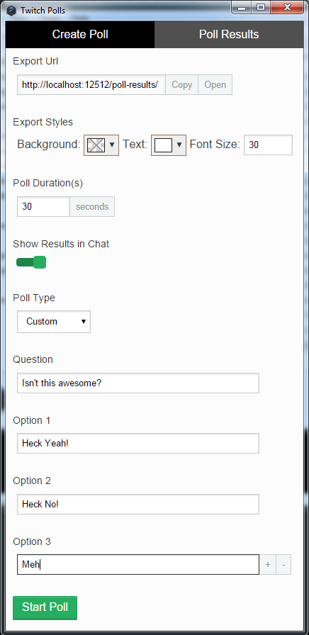

A NW.JS application that you can use to create polls in Twitch Chat and integrate them into streams.
This is a Windows Application that you can use to poll Twitch viewers in twitch chat and integrate those results into your live streams.
Installation of Twitch Polls, simply download the release rar, extract the rar somewhere, and run TwitchPolls.exe in the extracted directory.
Creating a poll is easy, all you have to do is set the poll options and then start the poll.
The options that you can set are as follows:
After you've set the options you want, you just have to hit the "Start Poll" button to start the poll. The application will send a message to the chat (under your channels username) signifying the start of the poll and describing how to vote for the various options.
The poll will run for the duration set in the options, then when finished will display the results based off of your settings.
You can integrate the results of the poll into your stream by simply adding the URL provided as an "Export Url" to the scene in your streaming software. For XSplit 2.0 you can add this directly as a Webpage URL, for OBS you may need to load the page in a web browser and include the browsers tab.
The "Export Styles" option lets you change some of the details of how this information is output, including the background color (for chroma keying), the text color, and how large the text is.
For more detailed changing of the exported web page, go to the "Changing the results page" section of the readme.
The default settings are optimized for XSplit which automatically sets the background of the page to transparent. For OBS you may need to change the background to a color you can Chroma Key out.
The default results page is designed to give you a spartan set of results that you can easily change through custom CSS or JS in XSplit.
However, if you need a different layout to fit your stream you can easily change how the webpage outputs by changing the templates/results.html file.
This file is a simple swig file with all of the various variables and things you may need to create the exact layout you want documented in the file itself.